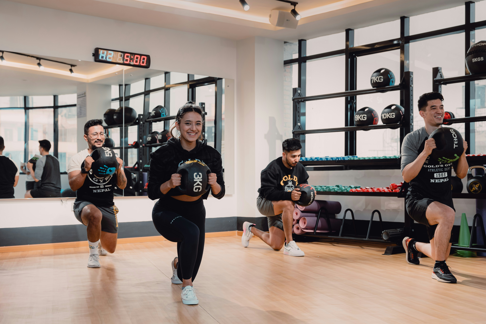
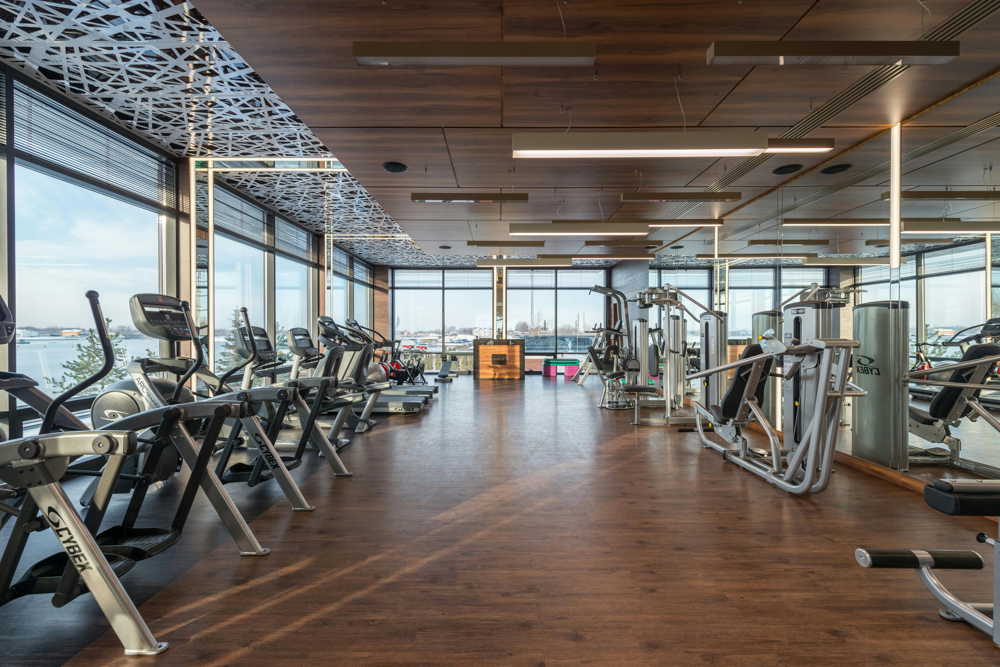
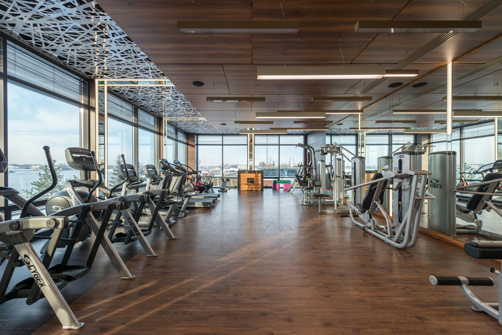

Nuestras Sedes
Sede Capital
Lima 757 CABA
Horario
Lunes a Viernes
6h - 22h
Sábados/Feriados
9h - 16h
Domingos
9h - 14h



Sede Pinamar
Av. Intermédanos Sur 776
Pinamar
Horario
Lunes a Viernes
6h - 22h
Sábados/Feriados
9h - 16h
Domingos
9h - 14h

 
